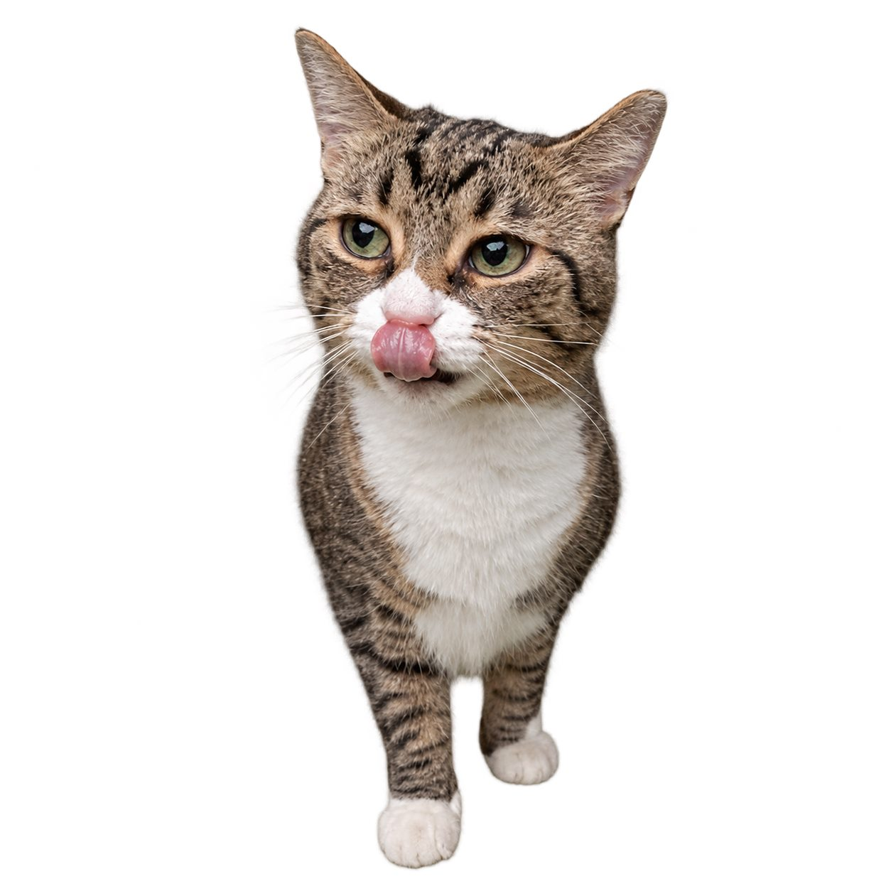
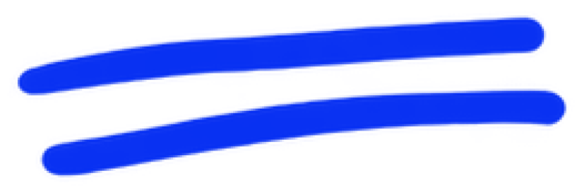
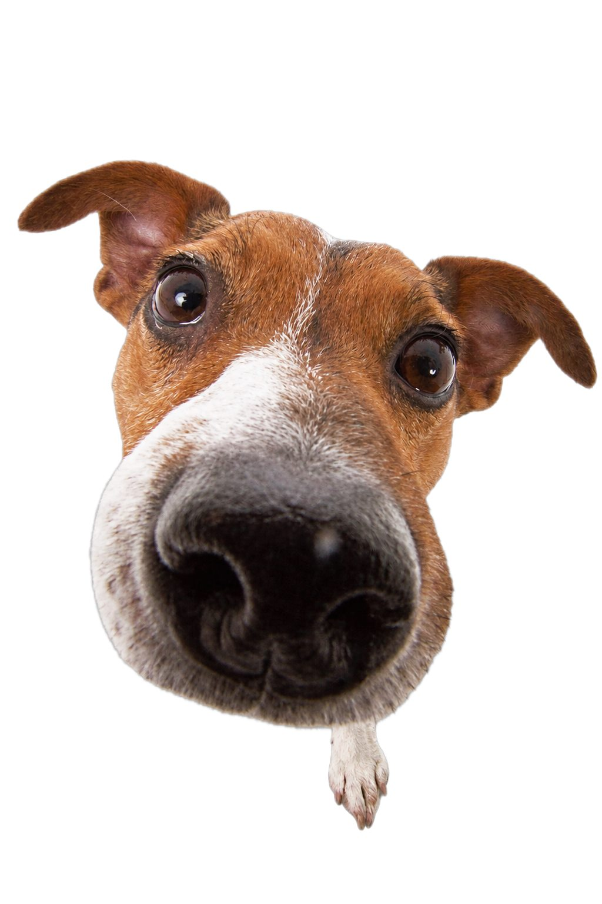
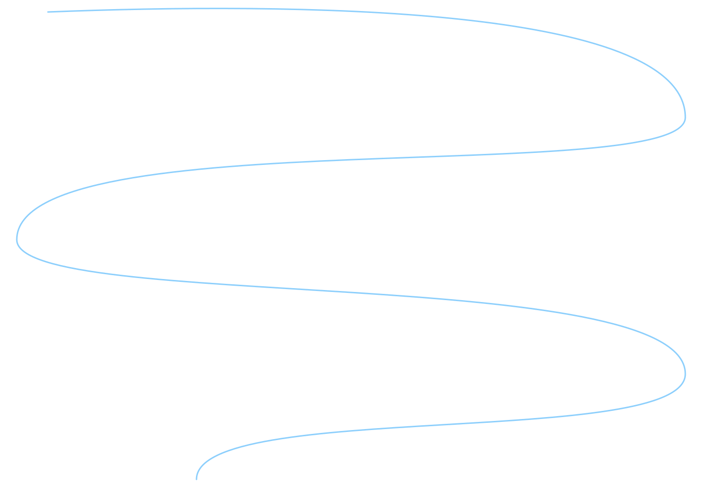
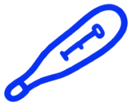
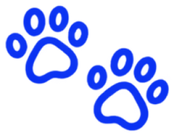
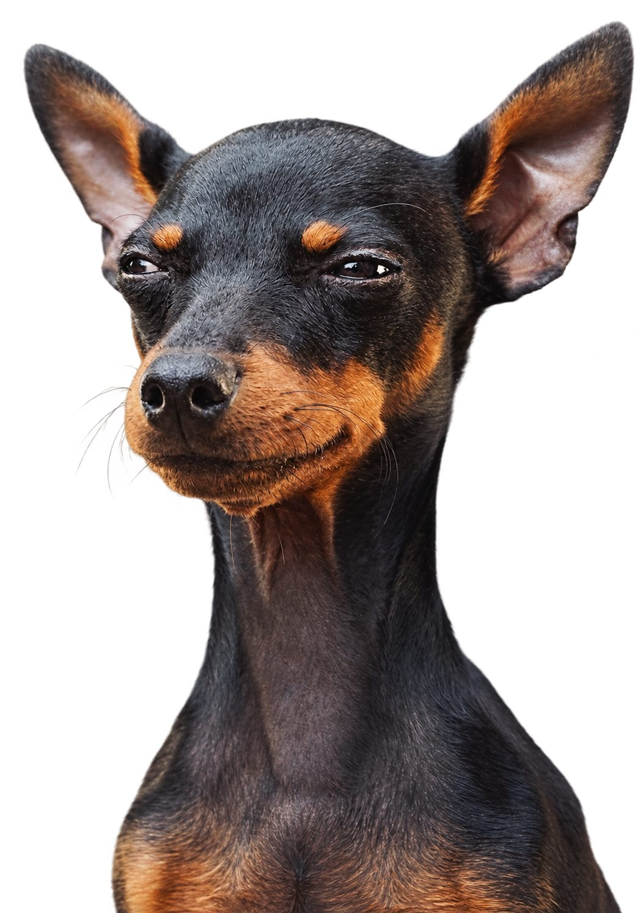
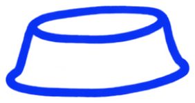
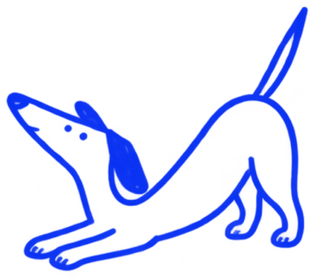
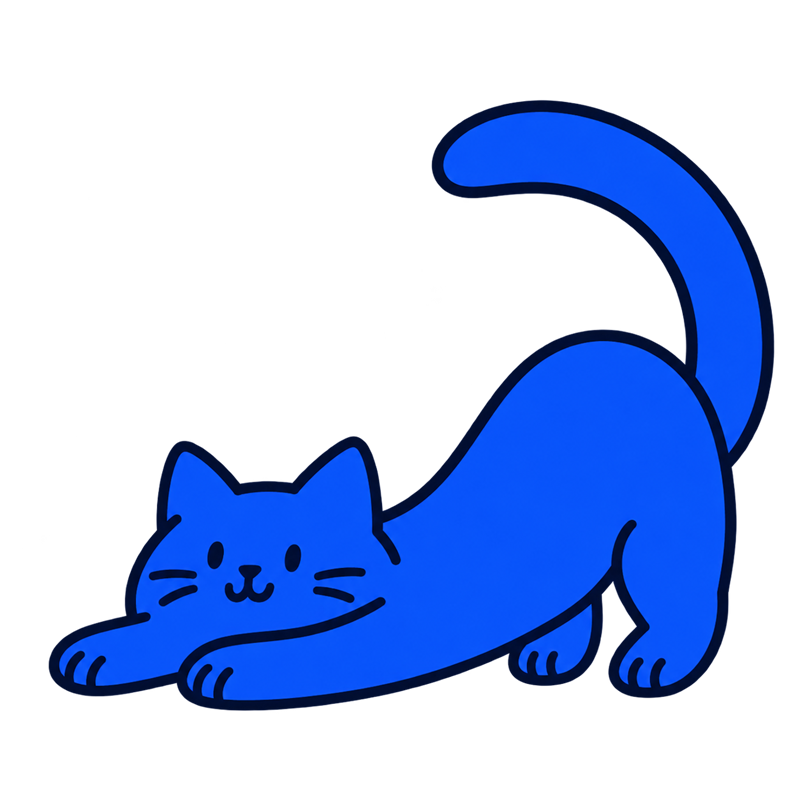

Промежностная грыжа

У кошек и собак
Восстановление мышц таза, через ослабленную стенку которых выпячиваются прямая кишка, жир, а иногда мочевой пузырь. Чаще у пожилых некастрированных кобелей.
Хирург: Владислав Белорыбец
38 500 ₽
- Длительность
- 1,5–2,5 часа
- Анестезия
- Общий наркоз и эпидуральная
- Стационар
- 1–3 суток
- Снятие швов
- Через 12–14 дней
- Восстановление
- 3–4 недели
Что это
за операция
Промежностная грыжа — ослабление мышц тазовой диафрагмы рядом с анусом. Через дефект выпячиваются жир, прямая кишка, а иногда простата и мочевой пузырь. Чаще болеют пожилые некастрированные кобели.
Что важно знать
Признаки: припухлость сбоку от ануса, запоры, натуживание. Если в грыжу смещается мочевой пузырь и перегибается, мочеиспускание прекращается — это экстренная ситуация.

Когда нужна
операция
- 01Выпячивание сбоку от ануса
- 02Запоры, натуживание при дефекации
- 03Смещение мочевого пузыря в грыжу — показание к срочной операции
Срочно к врачу
Кобель тужится и не может помочиться
Припухлость стала плотной и болезненной
Рвота, вялость
По экстренной записи — буду в клинике за 15 минут, даже ночью.
Тяжёлых пациентов принимаем без очереди.
Одна операция.
Понятная стоимость.
| Комплекс | 38 500 ₽ |
|---|
Без наркоза, анализов, стационара и препаратов.
Точную смету врач называет после осмотра.
Понятно

Смета и план операции —
до её начала.
До операции —
Всё
по плану
8–12
часов голода
перед наркозом
- ×Ректальный осмотр, УЗИ: где мочевой пузырь, состояние простаты
- ×Анализы крови
- ×Размягчение стула перед операцией
- ×Осмотр и сбор анамнеза: какие болезни были, какие лекарства принимает питомец
- ×Анализы крови, а по показаниям — УЗИ, рентген, ЭКГ
Воду —
по рекомендации
врача.
Смета и план операции — до её начала.
Как проходит
операция


- 01Наркоз, эпидуральная анестезия
- 02Возвращение органов на место
- 03Закрытие дефекта мышцами (часто с перемещением внутренней запирательной мышцы)
- 04Кастрация
- 05Фиксация прямой кишки, мочевого пузыря и семявыносящих протоков (колопексия, цистопексия, вазопексия)
Восстановление
Шаг за шагом
Мягкий стул (размягчающие средства, влажный корм), воротник, ограничение активности 3–4 недели.
- ДеньоперацииНаблюдение после наркоза, обезболивание, при необходимости — капельницы в стационаре.
- 1–3суткиНачинаем кормить небольшими порциями. Домой — когда питомец ест, пьёт и хорошо себя чувствует.
- 3–7деньДома: лёгкий корм, обезболивающие, контроль температуры, стула и мочеиспускания.
- 10–14деньКонтрольный осмотр и снятие швов.
- 3–4неделиПостепенное возвращение к обычной активности.
Сроки ориентировочные: врач скорректирует их по ходу восстановления.

Теперь вы дома.
Забота — в простых вещах.
Что важно помнить
- 01Воротник или послеоперационная попона — пока не снимут швы
- 02Обезболивающие и другие препараты — строго по схеме, не отменяйте их сами
- 03Каждый день осматривайте шов: в первые дни допустимы лёгкое покраснение и небольшой отёк
- 04В первые сутки кормите небольшими порциями
- 05Мягкий стул: влажный корм и размягчающие средства по назначению
- 06Воротник, гигиена области операции
- 07Ограничение активности 3–4 недели
По схеме врача.


Когда нужен
контроль врача
Рецидив (особенно без кастрации), временное недержание кала, инфекция раны.
Покажите питомца врачу, если заметили:
Температура выше 39,5 °C.
Отказ от еды больше суток, повторная рвота.
- Кровотечение из раны или повязки.
- Шов разошёлся или из него выделяется гной.
- Выраженная вялость, бледные дёсны, тяжёлое дыхание.
Играть.
Гулять.
Жить.

Прогноз
Комплексная операция с кастрацией и фиксацией органов заметно снижает риск рецидива. Двусторонние грыжи иногда оперируют поэтапно.
У каждого питомца — свой темп.
Важно знать
Зачем столько манипуляций в одной операции?
Кастрация уменьшает простату и гормональное влияние, а фиксация органов не даёт им снова сместиться в грыжу.
Можно ли лечить диетой?
Мягкий стул облегчает симптомы, но дефект мышц сам не закроется.
Сколько длится операция?
Обычно 1,5–2,5 часа. Точное время зависит от размера питомца и того, что хирург увидит во время операции.
Когда можно забрать питомца домой?
1–3 суток. Домой отпускаем, когда питомец проснулся, стабилен и вы получили письменные рекомендации.
Когда снимают швы?
Через 12–14 дней. Если швы внутрикожные или рассасывающиеся, снимать их не нужно.
Другие операции
репродуктивной хирургии
Обсудим
ваш случай
Пришлите анализы, снимки и заключения — посмотрю и отвечу, нужна ли операция и как к ней подготовиться.
